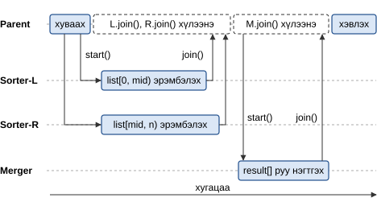
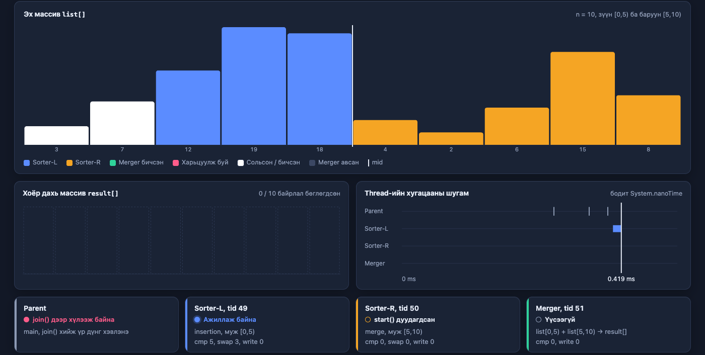
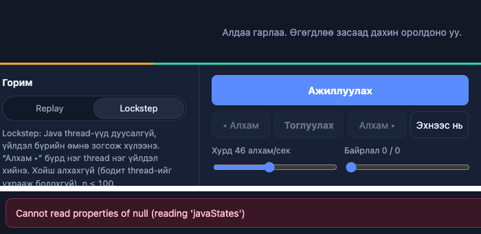
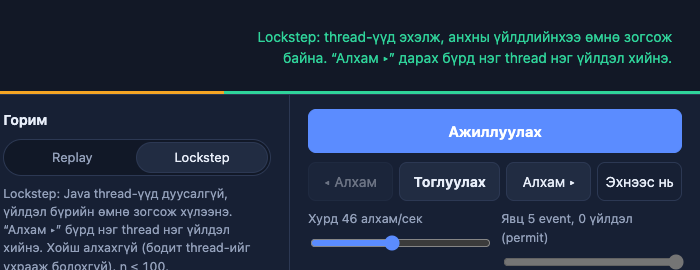
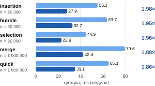

Асуудал
Operating System Concepts номын 4-р бүлгийн даалгавар. Жагсаалтыг хоёр хувааж, хоёр sorting thread зэрэг эрэмбэлнэ. Дараа нь merging thread хоёр дахь массив руу нэгтгэж, parent thread бүгдийг хүлээгээд үр дүнг хэвлэнэ.
Гол асуудал: хуваалцсан массивт lock-гүйгээр зөв бичих, thread дуусахыг зөв дарааллаар хүлээх, мөн бодит thread-ийн ажиллагааг UI дээр харуулах.
Шийдэл
Sorter-L, Sorter-R давхцахгүй мужид ажиллах тул lock хэрэггүй. Merger хоёр join()-ийн дараа л эхэлнэ.

- Replay: Java дээр бүртгэсэн event-ийг урагш, хойш тоглуулна (n ≤ 300).
- Lockstep: амьд thread бүр үйлдлийн өмнө Semaphore-ийн permit хүлээнэ (n ≤ 100).
Туршилт ба дүрслэл
Өөрчлөх зүйл
Оролт (гараар, санамсаргүй), хоёр sorter-ийн алгоритм (5 × 5), горим, хурдАжиглах зүйл
Thread-ийн төлөв (WAITING, TERMINATED), хугацааны шугам, eventДемонстрац



Үр дүн

Сайжруулалт
runSeq дугаараар хаяна.Дүгнэлт
Гол үр дүн: номын fork–join бүтэц ба lock-гүй зөв ажиллагаа хадгалагдсан. IV-2-13 багийн есөн шүүмжийн зургааг бүрэн, гурвыг хэсэгчлэн хүлээн авч засварласан. 114 тест бүгд амжилттай, өмнөх 100 тест шинэ код дээр өөрчлөлтгүй давсан.
Хязгаарлалт: БД2-ын хувилбарыг зөвхөн macOS дээр туршсан. Нэгтгэх үе дан thread-ээр явдаг тул хурдсалт 2-т хүрэхгүй. Lockstep горимд хойш алхах боломжгүй.
GitHub
github.com/Munkhgerelt/
F.CSM302-TeamProject-2-4-6
./build.sh → ./run.sh --web